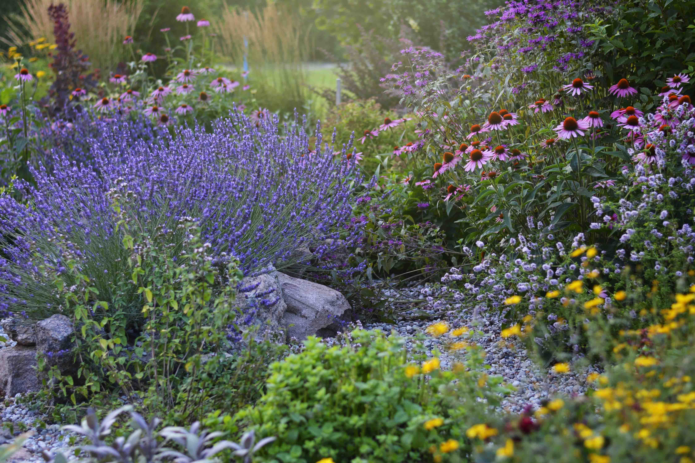

The Look
Water-Wise Doesn't Mean Bare
A well-designed xeriscape reads as intentional, layered, and full — not a gravel yard with a cactus in the middle.


Xeriscape design and installation, drip line irrigation and conversion, and fertigation — so your landscape thrives on a fraction of the water a traditional lawn needs.
Salt Lake City and Park City sit in one of the driest climates in the country, yet most yards are still planted and irrigated like it rains all summer. Traditional turf needs frequent, shallow watering just to survive — and every overhead cycle loses water to evaporation, wind drift, and runoff before it ever reaches a root.
Xeriscaping flips that equation: regionally adapted plants, efficient drip delivery, and mulch or rock groundcover that holds moisture instead of shedding it. The result is a landscape that looks intentional and layered year-round, uses a fraction of the water, and asks a lot less of you — less mowing, less fertilizing, less time spent fighting your own yard.
Explore Our Services →Xeriscaping only works long-term when the planting, the irrigation, and the feeding schedule are designed together. We handle all three, whether you want a full yard transformation or a targeted conversion of your thirstiest beds.
A custom plan for your yard's sun exposure, slope, and soil — built with regionally adapted, drought tolerant plants, mulch or rock groundcover, and layout that keeps curb appeal front and center.
New drip systems for xeriscape beds, or a straight conversion of your existing overhead spray zones to drip — delivering water directly to the root zone instead of the air and pavement around it.
Liquid nutrients delivered straight through your drip lines to the root zone of shrubs, perennials, and new plantings — precise feeding that helps drought-tolerant plants establish faster, without waste.
We walk your property, evaluate sun, slope, soil, and existing irrigation, and talk through your goals and budget.
A custom planting and irrigation plan with a firm quote — full conversion or a targeted section, your call.
Turf removal where needed, drip line install or conversion, planting, and groundcover — most projects completed in days, not weeks.
Fertigation and a tuned watering schedule get new plantings established fast, then scale back as the landscape matures.
A well-designed xeriscape reads as intentional, layered, and full — not a gravel yard with a cactus in the middle.

If plantings from your installation fail to establish within 90 days under normal conditions, we replace them — free. We design for your yard's actual sun, soil, and water, so it's built to succeed from day one.
Xeriscaping is landscape design built around drought-tolerant plants, efficient drip irrigation, and mulch or rock groundcover instead of thirsty turf. Done well, it still looks lush and intentional — it isn't just gravel and cactus.
Yes. Replacing spray-irrigated turf with drip-irrigated, drought-tolerant planting typically cuts landscape water use by 50-60%, since drip delivers water directly to the root zone with far less evaporation and runoff than overhead sprinklers.
Yes. We install drip conversion kits on existing irrigation zones — planter beds, park strips, shrub rows — without a full landscape redesign, so you can cut water waste in specific areas without replacing your whole yard.
Utah's statewide Landscape Incentive Program and local water conservancy districts, including Jordan Valley, offer per-square-foot rebates for converting grass to water-wise landscaping with drip irrigation. Rebate amounts and eligibility vary by district and change over time, so we help confirm current program details and requirements before you start.
Yes. Fertigation delivers liquid nutrients through drip lines directly to the root zone of shrubs, perennials, and native plantings, which is a more precise and less wasteful way to feed a xeriscape bed than surface-broadcast fertilizer.
We serve residential properties in Salt Lake City and Park City, Utah.
Tell us about your yard and we'll walk you through what a xeriscape conversion, drip install, or fertigation upgrade could look like — no pressure, no obligation.
Call Us Now →